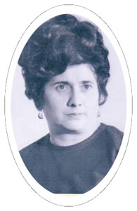
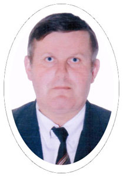

ЛЬВІВСЬКИЙ ДЕРЖАВНИЙ БУДИНОК ТЕХНІКИ
Позашкільний заклад освіти
Історія
Освіта і майбутнє – це два ключові аспекти, з позицій яких ми бачимо стан справ, що нині склався в галузі професійної освіти в країні, і на Львівщині в тому числі. Саме освіта є могутнім чинником розвитку культури українського народу, відтворення інтелектуальних і продуктивних сил суспільства, запорукою майбутніх успіхів у зміцненні й утвердженні авторитету України як суверенної, незалежної, демократичної, соціальної та правової держави – повноправного члена європейської та світової спільноти.
Будинок техніки вбачає своє призначення в тому, щоб передати молодій людині глибокі загальнокультурні основи, розвинути її здібності й задатки, вміння знайти себе в період динамічних умов особистого, соціального і професійного життя. Тому прагнемо закласти в учнях глибокі основи певної сфери майбутньої професійної діяльності. Адже зростання економіки диктує таку систему освіти, яка могла б готувати людей до життя в умовах цих змін.
Звертаючись до історії нашої установи, яку за наказом Держпрофтехосвіти УРСР створено у липні 1986 року, варто підкреслити, що із самого початку Львівський державний Будинок техніки став у першому ряду серед відповідних закладів України. Результати роботи позашкільного закладу освіти знаменували участь у обласних та всеукраїнських виставках науково-технічної та художньо-прикладної творчості, досягнень винахідників і раціоналізаторів, зокрема, і на тодішніх виставках ВДНГ у Москві. З початку створення під керівництвом директорів Дев’ятової Ірини Іванівни (з липня 1986 р. до лютого 1988 р.), Перуна Степана Семеновича (з лютого 1988 р. до листопада 1998 р.), Вахули Романа Стефановича (з березня 1999 р. по 2019 p.) та Івашкевич Лілії Михайлівни (з 2019 р. по даний час) Будинок техніки об'єднав ряд поколінь у творчій гуртковій роботі, залучивши більше 50 тисяч учнів профтехосвіти області. Численні відзнаки, призи, різного плану титули та номінації стали свідченням належного рівня його навчально-педагогічної діяльності.
 Дев'ятова І. І. Перун С.С.
Планово проводиться методична робота, що має певну систему колективних й індивідуальних форм і є справжньою школою удосконалення та підвищення фахового рівня керівників гуртків. Її координує заступник директора з навчально-виховної та методичної роботи Івашкевич Лілія Михайлівна. В практику роботи увійшла організація тематичних масових заходів як серед учнівської молоді так і серед їх наставників. Позашкільний заклад освіти має великий досвід проведення конкурсів професійної майстерності та раціоналізаторства, ділових ігор, словом, – впровадження різноманітних форм і методів масових заходів, мета яких – виховання молоді на національних традиціях, а отже – відновлення традиційних моральних ідеалів українців, ідеалів, що базуються на загальнолюдських національних цінностях.
Діяльність завідувачів відділів і методистів, зокрема, Мудрика В.М., Калини В.В., Мастикаш Н.О., Войтюка В.В., Філя І.М., Фолюша С.Д., Пацкаль Г.Й., Гончарук Н.Б., Яцути Н.Р. тісно пов’язана з педколективами ПТНЗ, що впливає на безпосереднє підвищення кваліфікації педагогів та забезпечує взаємозв’язок і налаштовує на творчий підхід до праці. Їм притаманний високий фаховий рівень, знання методологічних основ особистісно орієнтованого, індивідуального та компетентного підходу до навчання, оволодіння методикою організації заняття у гуртках за вибором, уміння застосовувати методи та технології навчання, які стимулюють самостійну роботу учнів, сприяють їх самоорганізації, становленню ціннісних орієнтирів.
Як бачимо, методична служба – структурна одиниця педагогічного процесу. Тісно співпрацюємо із Львівським науково-практичним центром профтехосвіти Академії педагогічних наук України (директор Я. Г. Камінецький). Так, із жовтня 2009 року на базі Львівського державного Будинку техніки створено обласний експериментальний педагогічний майданчик, у перспективі – створення на базі позашкільного закладу освіти Малої технічної академії. Налагоджена робота з Державним підприємством ”Львівський науково-виробничий центр стандартизації, метрології та сертифікації” (генеральний директор В. М. Друзюк), Музеєм народної архітектури та побуту (директор І. П. Косячевич), Львівським фізико-механічним інститутом національної академії наук України (директор В.В. Панасюк), Дрогобицьким державним педуніверситетом ім. Івана Франка (проректор М. В. Чернець), Українською академією дизайну (ректор В. Ф. Марчак), Львівським обласним центром науково-технічної творчості учнівської молоді (директор Ю. Чорненький), Центром творчості дітей та юнацтва Галичини (директор О.С. Кузик) та ін. Всі заходи та плани спрямовані на подальше навчання і виховання робітничої зміни, де пріоритетними є особистість, а разом із цим – становлення її інтелекту, духовності й моральності.
Обличчям Будинку техніки є його педпрацівники, керівники гуртків, які ведуть заняття в навчальних закладах професійної освіти Львова та області. Перемоги, здобутки наша позашкільна навчально-виховна установа отримує саме завдяки їхній праці. До них належать і ветерани нашої установи: Буряк Г.І., Вербовський Л.А., Ботишева Л.М., Григорян К.Г., Лапан Л.Я., Кінаш В.С. Спостерігається позитивна тенденція збільшення чисельності педагогів, які мають високий освітньо-кваліфікаційний рівень.
Гордістю стали кращі педагоги-новатори, керівники гуртків: Копичин Л.Р., Буланович Л.Т., Любімова Г.І., Кархут О.М., Охендушкевич М.Й., Яремин В.М., Боянівський С.М., Гук В.В., Солтис Л.В., Ковальчин М.М. Разом з учнями вони проводять плідну науково-дослідну роботу, а науково-технічні та художньо мистецькі розробки щорічно представлені на виставці української профтехосвіти у м. Києві та регіональних, обласних, районних і міських виставках. Їхній педагогічний досвід містить в собі потужний гуманістичний ідеал і має важливе значення для виховання підростаючого покоління.